Woo Chang Chung • Julius de Hond
Jinggang Xiang (项晶罡) • Enid Cruz-Colón
Wolfgang Ketterle
\[\begin{aligned} \circ & = |a\rangle = |1,-1\rangle \\ \bullet & = |b\rangle = |1,1\rangle/|1,0\rangle \end{aligned}\]
See Schachenmayer et al., PRA 92 041602(R)
Create superposition state with global $\pi/2$ pulse:
\[\begin{aligned} |\psi\rangle = & \frac{1}{\sqrt{2}} \left( |a\rangle - i|b\rangle \right)^{\otimes 2} \\ \xrightarrow{\mathrm{spin\,model}} & \frac{1}{2} \left( |\!\Uparrow\rangle -i\sqrt{2}|\circ\rangle - |\!\Downarrow\rangle \right) \end{aligned}\]
\[ \begin{pmatrix} J + 2D & -\sqrt{2} J \\ -\sqrt{2} J & 0 \end{pmatrix} \left| \begin{matrix} \left(|\!\Uparrow\Downarrow\rangle + |\!\Downarrow\Uparrow\rangle\right)/\sqrt{2} \\ |\circ\circ\rangle \end{matrix} \right\rangle \]

$D/J < 0$
Spin alignment $A = S(S+1) - 3S_z^{~2}$

$D/J > 0$
Spin alignment $A = S(S+1) - 3S_z^{~2}$

Paper: Chung et al., Phys. Rev. Lett. 126, 163203
Slides: dehond.github.io/damop2021